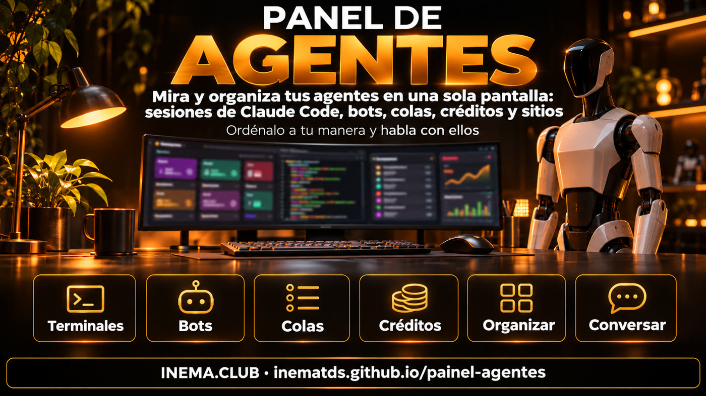

painel-agentes es una página que funciona en tu computadora y muestra, en una sola pantalla, todo lo que hacen tus agentes de IA: las sesiones abiertas de Claude Code (y si las abrió una persona o un bot), los bots, las colas de publicación, los límites de la suscripción y si tus sitios están en línea. Está pensado para quien deja varios agentes trabajando y pierde la cuenta de dónde está cada uno. Puedes cambiar los cuadros de lugar como prefieras y, si quieres, conversar con un bot o terminal desde ahí mismo. Necesitas Node 20+ y Linux; para conocerlo, el modo de demostración no lee nada tuyo.
Qué es
Una pantalla para los agentes que trabajan por ti
Quien usa agentes termina con cinco terminales abiertos, dos bots funcionando de madrugada y una cola que nadie revisó. El panel reúne todo y te dice qué está esperando por ti.

👀 Todo de un vistazo
Nueve cuadros: lo que te espera, máquina, bots, producción, publicación, créditos, sitios, vacantes y terminales. Cada uno indica en una frase si todo está bien.
🧩 Organiza a tu manera
El botón Organizar (Organizar) cambia los cuadros de lugar (tocando o arrastrando). Tres formas de ver: Lista (Lista), Íconos (Íconos) e Imagens (Imágenes), y una versión Jarvis con voz.
💬 Conversa con ellos
Abre una sesión y lee la conversación, mira la pantalla en vivo y, si lo activas, escribe en ella. El panel Conversar (Conversar) se comunica con uno de tus bots o con un terminal.
Las pantallas
Así se ve en la práctica
Todas las imágenes de abajo son del modo de demostración: datos inventados, no pertenecen a nadie. Es exactamente lo que ves al ejecutar npm run demo. La interfaz del panel y las imágenes están en portugués; aquí verás los nombres de los botones tal como aparecen en pantalla.
Panel clásico — ListaArriba, la franja de alertas (errores en rojo, avisos con !). Abajo, los cuadros. En Terminais (Terminales), 👤 es una sesión que abriste tú y 🤖 es una sesión que abrió un bot.Modo Imagens (Imágenes)Producción, publicación y terminales se convierten en tarjetas con imágenes. Ideal para tenerlo en un televisor en una esquina de la sala.Publicação (Publicación): las colas elemento por elementoCada elemento tiene un solo estado, sin importar el formato de tu cola.Sesión — pestaña Dados (Datos)Quién la abrió, cómo ingresó, modelo, cuánto contexto ya usó, costo equivalente y la última solicitud.Sesión — pestaña Conteúdo (Contenido)La conversación, solo lectura, se actualiza cada 5 s. Las claves y contraseñas que aparezcan se ocultan.Sesión — pestaña TerminalLa pantalla en vivo. Para escribir en ella (Assumir (Tomar el control)), necesitas PAINEL_ASSUMIR=1 y que la sesión esté abierta en tmux del panel.Organizar (Organizar)Los cuadros quedan delimitados por líneas punteadas: toca uno y luego el lugar al que lo quieres mover, o arrástralo. Haz clic en Pronto (Listo). El cambio se guarda en este dispositivo.Panel Conversar (Conversar)Elige un bot o un terminal y escribe. Tiene los botones Esc, Ctrl+C, flechas y Enter, además de + Novo terminal (+ Nuevo terminal).Versão Jarvis (Versión Jarvis) (/jarvis)Los mismos datos con un aspecto HUD (panel al estilo de una película de ciencia ficción): núcleo animado, una frase por sistema, "Bom dia" (Buenos días) hablado y atajos de teclado (1 Bom dia · 2 Status · 3 O que espera · 4 Modo foco · 5 Trocar visão).
También en el celular
Los cuadros se apilan y los botones pasan a la siguiente línea. Para verlo fuera de casa, usa una red local o una VPN (una red privada entre tus dispositivos), con contraseña (consulta Seguridad).
Los estados de las colas, iguales en cualquier formato:
! na fila (en cola)✓ publicando✓ hecho× errorretirado
Cómo funciona
Solo lee lo que ya está en la máquina
El panel no llama a ningún modelo de IA ni API. Lee archivos que tus agentes y Claude Code ya guardan, y muestra todo junto. Lo que no configures aparece como "no configurado", nunca como error.
Tus agentes trabajan→guardan sesiones, colas y ejecuciones→el panel lee cada 15 s→las reglas señalan lo que requiere atención→miras, organizas y actúas
De dónde vienen los datos
Sesiones: ~/.claude/sessions y ~/.claude/projects
Máquina: /proc, disco, journalctl
Bots: systemctl --user y bases SQLite (bases de datos en un archivo), solo lectura
Qué indicas en la configuración
Archivos de colas (JSON o TXT)
Historial de envíos y ejecuciones (JSONL: archivo de registro con un evento por línea)
Sitios que hay que revisar, vacantes, avisos con fecha límite
Dos formas, los mismos datos
/painel: clásico, con Lista (Lista), Ícones (Íconos) e Imagens (Imágenes)
/jarvis: HUD con voz y atajos
Con la voz activada, solo anuncia las alertas nuevas
Requisitos previos
Qué necesitas
Una computadora o VPS con Linux (los datos de la máquina vienen de /proc) y Node instalado.
Node 20 o posterior
Probado con Node 22.
node -v # v20 ou maior
Git
Para descargar el proyecto.
git --version
tmux (opcional)
Solo si quieres ver la pantalla en vivo, usar Assumir (Tomar el control) o abrir Novo terminal (Nuevo terminal).
tmux -V
Guía de uso · paso a paso
Desde cero hasta tener el panel en línea
Empieza con el modo de demostración para conocer la pantalla. Después indica dónde están tus archivos.
1
Descarga e instala
Clona el repositorio, instala las dependencias y compila.
git clonehttps://github.com/inematds/painel-agentescd painel-agentes
npm ci && npm run build
Si aparece un error de compilación de better-sqlite3, puedes seguir: es opcional. Sin eso, el panel funciona igual; el cuadro Bots deja de leer las bases de datos y muestra solo los servicios.
2
Conoce la pantalla en modo de demostración
Datos inventados en los nueve cuadros, sin iniciar sesión ni leer nada tuyo. Abre http://127.0.0.1:3143/painel y después /jarvis.
npm run demo# igual que PAINEL_DEMO=1 node dist/index.js
Prueba los botones: Lista (Lista), Ícones (Íconos), Imagens (Imágenes), Organizar (Organizar) (cambia dos cuadros de lugar), Conversar (Conversar) y haz clic en una sesión en Terminais (Terminales). Deténlo con Ctrl+C.
3
Crea tu configuración
Copia el ejemplo y borra lo que no uses. Todas las claves son opcionales: si no pones una, el cuadro muestra "no configurado".
cp painel.config.exemplo.json painel.config.json
nano painel.config.json # indica las rutas de tus colas, bots y sitios
El ejemplo incluye bots, colas y sitios ficticios (bot-tarefas, exemplo.com): borra esas entradas o cámbialas por las tuyas; de lo contrario, los cuadros mostrarán "sin datos" o alertas falsas. El cuadro Créditos solo muestra los límites de Claude si la statusline (línea de estado de Claude Code) guarda el archivo indicado en creditos.limites_claude.
Las sesiones de Claude Code aparecen sin configurar nada: el panel ya las busca en ~/.claude. La lista completa de claves está en el README.
4
Configura la contraseña
Solo se guarda el resumen (hash) de la contraseña. La contraseña debe tener al menos 12 caracteres. Con --gerar, el panel crea una contraseña segura y la guarda en el archivo ~/.config/painel-agentes/senha-inicial.txt (la terminal muestra la ruta): léela, guárdala en un lugar seguro y borra ese archivo.
npm run senha# escribes la contraseñanpm run senha -- --gerar # o genera una por ti
5
Inicia el panel
Abre en http://127.0.0.1:3143/painel, solo en esta computadora.
npm start
Para mantenerlo funcionando siempre, crea un servicio de systemd para el usuario:
systemctl --user daemon-reloadsystemctl --user enable --now painel-agentes
systemctl --user status painel-agentes # ¿está funcionando?journalctl --user -u painel-agentes -n 30 # si no arrancó, el error aparece aquíloginctl enable-linger# en una VPS: sigue funcionando cuando sales
Ajusta las dos líneas del servicio a tu caso: WorkingDirectory es la carpeta donde clonaste el proyecto (ej.: %h/projetos/painel-agentes; %h significa tu carpeta personal) y ExecStart usa la ruta que muestre el comando which node (con nvm es distinta de /usr/bin/node).
6
Organiza a tu manera
Haz clic en Organizar (Organizar), toca un cuadro y luego el lugar al que lo quieres mover (o arrástralo), y haz clic en Pronto (Listo). El orden se guarda en el navegador de ese dispositivo; Restaurar padrão (Restablecer valores predeterminados) lo deja como al inicio. Haz clic en cualquier cuadro para ver todos los detalles.
7
(Opcional) Assumir (Tomar el control) y Conversar (Conversar)
Están desactivados de forma predeterminada. Actívalos solo en una red de confianza: lee Seguridad antes.
Son dos claves diferentes. PAINEL_ASSUMIR=1 permite escribir en los terminales (pestaña Terminal, terminal del panel Conversar (Conversar) y + Novo terminal (+ Nuevo terminal)). PAINEL_CHAT=1 activa solo la conversación con tu bot, y únicamente si completas chat.bot.url en la configuración. Para activar ambas, ponlas en la misma línea:
PAINEL_ASSUMIR=1 PAINEL_CHAT=1 npm start
El panel solo puede ver y escribir en sesiones abiertas en el tmux del panel: un tmux independiente con el nombre painel. Una sesión de Claude abierta fuera de ahí aparece en la lista, pero no puedes usar Assumir (Tomar el control). Para abrir un agente dentro:
tmux -L painel new -s meu-projeto claude
El botón + Novo terminal (+ Nuevo terminal) lo hace por ti, siempre dentro de la carpeta configurada en novo_terminal.raiz.
Seguridad
Bloqueado de forma predeterminada
El panel muestra mucha información de tu máquina. Por eso empieza bloqueado y tú habilitas solo lo que necesitas.
🔒 Solo en esta computadora
Se inicia en 127.0.0.1. Para abrirlo en la red ("bind": "0.0.0.0"), la contraseña es obligatoria: sin contraseña, la rechaza y se queda en esta computadora.
🔑 Inicio de sesión con contraseña
El inicio de sesión queda protegido en el navegador, el dispositivo se recuerda durante 365 días, 5 errores seguidos bloquean el acceso por 15 min y hay un botón "Sair de todos os aparelhos" (Cerrar sesión en todos los dispositivos).
👁️ Solo lectura
No llama a ningún modelo ni API; abre las bases de datos solo para leer; oculta las claves, los tokens y las contraseñas que aparecen en conversaciones y terminales.
🧪 Demostración aislada
En el modo de demostración no lee archivos, no ejecuta comandos, no accede a la red, solo responde en la propia computadora y rechaza cualquier escritura.
⚠️ Riesgo de Assumir (Tomar el control), Novo terminal (Nuevo terminal) y Conversar (Conversar)
Estas tres funciones escriben en el agente. Si Claude funciona sin pedir permiso, quien entre al panel podrá controlar tu máquina. Por eso están desactivadas. Si las activas, úsalas solo en una red local o VPN, nunca expuestas directamente a internet. Cada envío queda registrado en un log (solo el comienzo del texto, oculto); el de Assumir (Tomar el control) es assumir.log, en la carpeta de datos del panel.
Versiones
¿Completa o sencilla?
Hay una versión sencilla, hecha en Python y en un solo archivo, para quien solo quiere mirar sin instalar Node.
painel-agentes (esta)
jarvis-painel (versión sencilla)
Necesita
Node 20+ y Linux
Python 3 y un navegador
Qué muestra
9 cuadros: sesiones de Claude Code, bots, producción, colas elemento por elemento, créditos, sitios, vacantes, máquina y lo que está esperando por ti
temporizadores, colas, registros y tus pendientes, con aspecto HUD y voz
Organizar (Organizar), Conversar (Conversar), Assumir (Tomar el control)
sí (Conversar y Assumir están desactivados de forma predeterminada)